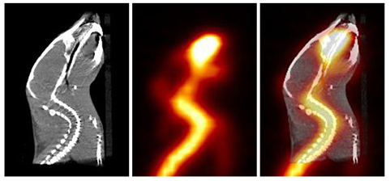

Los radiotrazadores son sustancias químicas marcadas con radionucleidos, es decir, con átomos que emiten radiación. Estos trazadores se utilizan ampliamente en diversas áreas de la ciencia y la medicina para rastrear y estudiar procesos biológicos, químicos y físicos Cómo Funcionan los Radiotrazadores Un radiotrazador se comporta químicamente de manera idéntica a la sustancia a la que está marcado, pero puede ser detectado debido a su emisión de radiación. Esta radiación puede ser medida mediante detectores externos, permitiendo a los científicos y médicos rastrear la localización y concentración del radiotrazador en el sistema estudiado. 